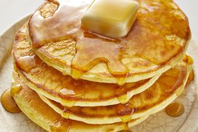

Good ol'Fashioned Pancakes

Description
I found this pancake recipe in my Grandma's recipe book.
Judging from the weathered look of this recipe card, this
was a family favorite.
Ingredients
- 1 ½ cups all-purpose flour
- ½ teaspoons baking powder
- tablespoon white sugar
- ¼ teaspoon salt, or more to taste
- 1 ¼ cups milk
- 3 tablespoons butter, melted
- 1 egg
Directions
- Sift flour, baking powder, sugar, and salt together in a large bowl. Make a well
in the center and add milk, melted butter, and egg; mix until smooth.
- Heat a lightly oiled griddle or pan over medium-high heat. Pour or scoop the batter
onto the griddle, using approximately 1/4 cup for each pancake; cook until bubbles
form and the edges are dry, about 2 to 3 minutes. Flip and cook until browned on
the other side. Repeat with remaining batter.